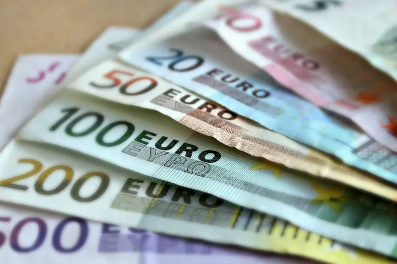
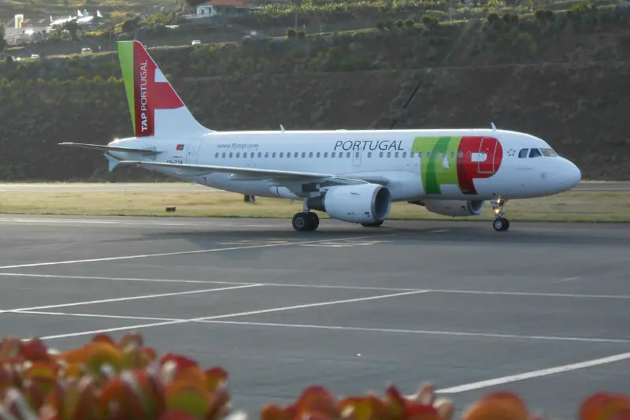
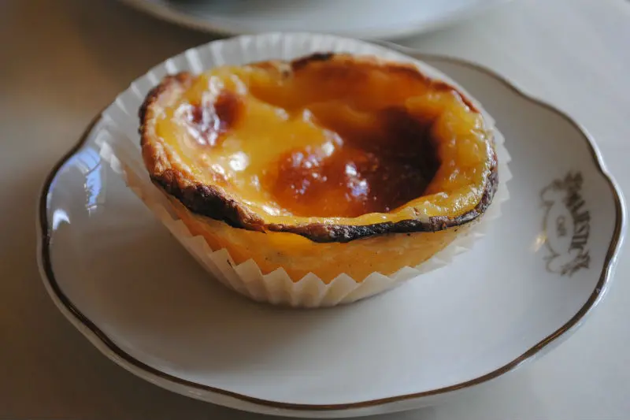
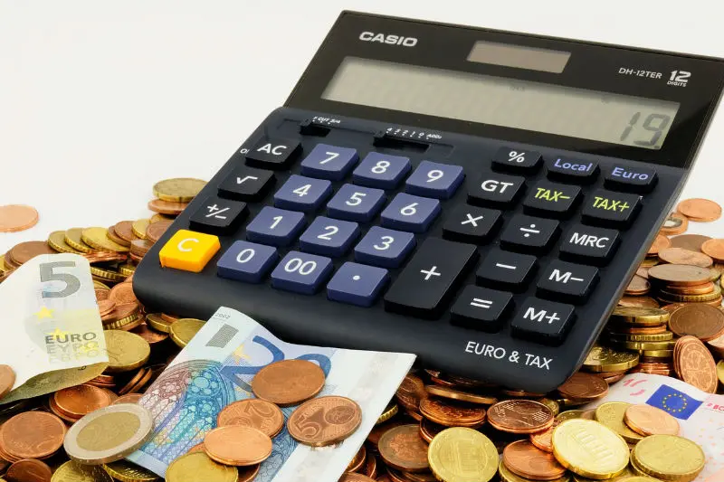
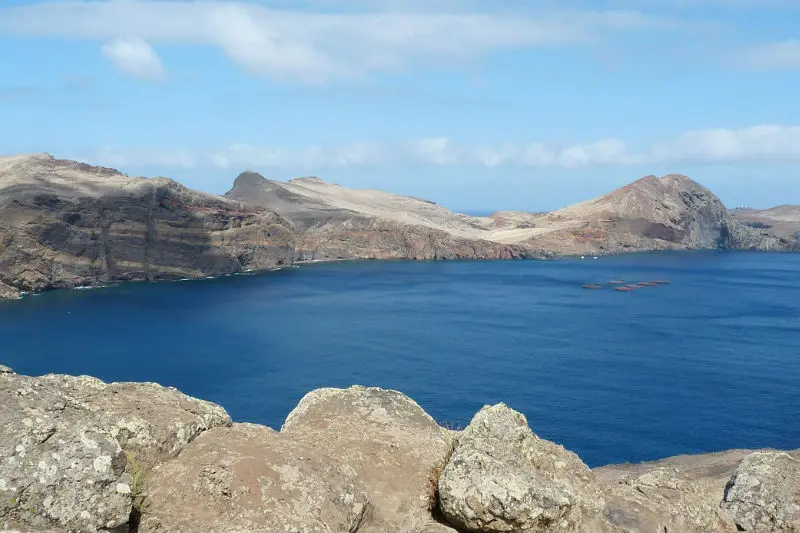
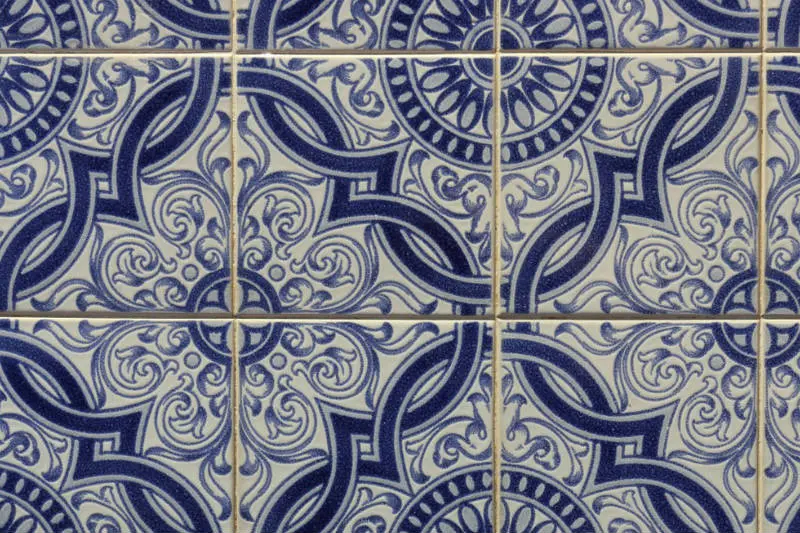

Viajar para Portugal
Portugal é um dos países que jamais pensei em conhecer. Isso aconteceu na minha vida! E dormi pela última vez em minha casa olhando duas malas. Eram o que restava das minhas coisas. Pensei: Que estou fazendo da minha vida? Mas fiz a escolha certa. Vivi intensamente os anos que morei lá. Faria quase tudo para morar em Portugal novamente.
Compra de euros
Vá comprando muitos meses antes da viagem. Nunca compre no aeroporto! Irá pagar bem mais caro pelo euro. Procure uma casa de câmbio ou uma agência de viagens para te orientar. Existem dias que o euro para turismo está mais barato para compra. A compra dos euros eu fazia diretamente na casa de câmbio. Ficava todo dia acompanhando. Depois decidi fazer um cartão de viagem. É um tipo de cartão que creditamos os euros. Usa em Portugal para pagar suas despesas. Acabou o dinheiro do cartão, pode jogar fora. Ou guarde de lembrança. Mas existem taxas. Eu, particularmente, não aconselho. Preferível levar tudo em espécie mesmo. Uma outra opção é o cartão de crédito internacional (Veja como é melhor levar dinheiro em viagens). Esteja ciente que a conversão do euro para o real será na data do pagamento do cartão. Vai pagar o valor do dia sem escolhas. Aconselho levar e utilizar em caso de emergências.
Passagem de ida e volta
Aconteceu uma única vez quando voltava para Portugal depois de uns dias no Brasil. Tive problemas. Ou melhor, um certo desconforto aliado a raiva. Tinha o título de residência provisório em Portugal. Emitido pelo SEF (Serviço de Estrangeiros e Fronteiras) lá próximo ao Marquês de Pombal. Apresentei tanto documento para obter esse título. Mas neste único dia percebi, tristemente, que sempre seria uma estrangeira. Pagar impostos em Portugal não me davam garantias. Nas 2 malas tinham coisas de artesanato e roupas. Tinha um tapete enorme de crochê feito pela minha irmã. Era um presente para nos sentirmos mais próximas. Hoje não imagino nossa proximidade por meio de um tapete. Mas isso foi importante na época. Fui conduzida a uma sala. Abri a mala que o policial apontou primeiro. Penso que era um policial. Na verdade não sei. Imaginava ser do serviço secreto de Portugal. Sentia indignação. Ele nem pegou na mão meu cartão de residência provisório. Pode isso?
Saboreie as comidas típicas portuguesas
Portugal mais importantes: não vai comer pizza portuguesa em Portugal. Entrei numa pizzaria e disse não preciso ver o cardápio. Quero pizza portuguesa. Responderam-me não temos esta pizza. E eu perplexa: O quê? Pensei em investir numa pizzaria em Portugal que tivesse pizza portuguesa. O slogan seria: A melhor pizza portuguesa do Brasil agora também em Portugal!
Quanto dinheiro levar?
Quanto custa viajar para Portugal? Quanto de dinheiro devo levar para os passeios e para comer? Existe um valor estipulado por pessoa para levar, mas isso não é uma regra, varia entre €45,00 e € 60,00. Calcule a quantidade de dias que irá permanecer no país. Pense num valor médio de alimentação para almoço e jantar. Calcule uma média com o metrô e aluguel de carro. Pesquise o valor dos passeios. Valor dos comboios (trem). Tudo isso poderá pesquisar antecipadamente. Organize numa planilha. Nesta altura do seu check list, já deverá ter uma reserva de euros comprados. Particularmente, sempre levo em espécie e deixo guardado no cofre do hotel. Assim, não tem como gastar em excesso num dia e faltar para o outro.
Conheça a Ilha da Madeira
Isso é minha frustração, um dia vou conhecer a Ilha da Madeira. Tive a oportunidade, faltou-me esperteza. Posso até estar depositando no leitor, um sonho meu, mas todas as pessoas que conheço e incluem a Ilha da Madeira em seu roteiro de Portugal, voltam encantadas.
Observe os detalhes de cada lugar por onde passa
Isso não se refere somente a minha neura de detalhes que enfrento essa semana, mas também como uma dica valiosa. Procure andar devagar, sentar num banco e olhar ao redor. Observe os prédios, observe as pessoas. Vivencie a experiência de cada momento sem correria, olhe para o céu durante o dia, vejam-no também a noite. Saia com predisposição de uma criança quando começa a ler. Já observou isso? A criança deseja ler cada cartaz, cada placa. Respire fundo e converse com as pessoas, o melhor de uma viagem é conhecer pessoas e a maneira como elas pensam. Fotografe, mas não esqueça de ver com seus próprios olhos, olhar através duma lente é diferente de observar. Mas também grave áudios. Grave vídeos, mas não perca muito tempo da sua viagem somente com isso. A minha melhor dica é que você aguce seus sentidos. Visão, audição, paladar, olfato e tato. Isso será a melhor lembrança que trará de sua viagem para Portugal.